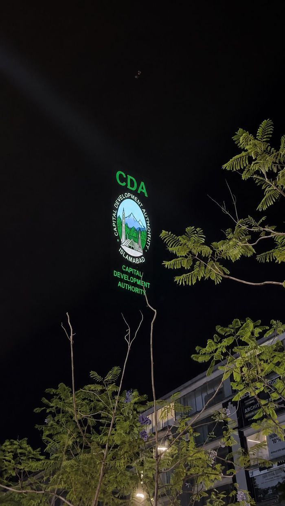

Holographic fans and mesh screens: when to use them
How holographic LED fans and mesh screens work, where each suits an event, and the content, brightness and safety checks to make before you book.

Clients often ask us for a hologram. What they usually mean is an image that appears to float in the air, with no visible screen behind it. Two technologies get close to that effect for events: holographic LED fans and mesh screens. Neither is a true hologram in the scientific sense, and neither suits every room. Each does one thing well, and each has limits that are worth understanding before a budget is set. This note explains how they work, where we would use each, and what to check before you commit.
How a holographic fan works
A holographic fan is a thin set of blades carrying rows of LEDs, spun fast by a motor. The LEDs change colour in step with the rotation, and because the eye holds an image for a fraction of a second, the spinning strip reads as a flat picture. The blades are thin and the space between them is empty, so the image seems to hang in the air, lit from itself.
A single fan makes a small, round picture. For a larger image, fans are mounted side by side or in a grid, and a controller splits one video across all of them so that the units read as one display. The more fans in the array, the larger the picture, and the more careful the alignment and synchronisation need to be.
The effect depends on contrast. The image is made of light, so it looks strongest against a dark background and weakest in bright ambient light. Black in your content is simply empty space with nothing lit, which is what makes a logo or a product seem to float.
How a mesh screen works
A mesh screen is a fine, open-weave fabric or net that catches projected light while letting most of the view behind it show through. A projector throws an image onto it, and the viewer sees the picture hanging in front of whatever lies behind the mesh. It can be stretched on a frame, hung from rigging or used in layers to give depth.
Mesh is much more flexible about size than a fan array. It can be a small sign or a very large hanging surface, limited mainly by the rigging, the wind and the projector. Because it is a projection surface, the normal rules of projection apply: brightness, throw distance, ambient light and alignment all matter. Our notes on projector brightness and projector placement apply directly.
Choosing between them
The two formats solve different problems, and the venue usually makes the decision for us.
Fans suit controlled, darker spaces. Exhibition stands, shop windows, lobbies, product launches and stage reveals are the typical homes. The image is bright for its size, needs no projector throw distance and is self-contained. The trade-off is that the picture is limited by the size of the array, and the visible blades and mounting hardware are part of the design.
Mesh suits larger, deeper or outdoor installations. Where you want a big floating image, a layered scene or a picture in front of a real backdrop, mesh gives more scale. The trade-off is that you now have a projector, a throw path and a hanging structure to plan, and the surface moves in the wind. Outdoor mesh needs a proper wind assessment, and the same weather discipline we describe in weather-proofing an outdoor projection mapping show.
If the question is really whether you need a floating effect at all, a conventional façade or LED surface may serve better. Our comparison of projection mapping and LED facades sets out how to make that call.
Designing content for floating images
Content for both formats follows a few shared rules, and breaking them is the most common reason a floating effect looks flat.
- Use black as a design element. Anything black disappears. Build the composition around a single bright subject and let the rest fall away.
- Keep shapes bold and simple. Fine detail, thin lines and small text soften in the air, especially on fans where the resolution of the array is limited. Large type and clear silhouettes hold up.
- Leave space around the subject. A floating object needs empty dark space to read as floating. Crowded frames look like a screen.
- Move with intent. Slow rotation, gentle drift and scale changes sell depth. Fast cuts and busy backgrounds do not.
- Plan the viewing angle. Many fan arrays are meant to be seen from the front. People standing to the side may see a thinner or distorted picture, a point we cover for projection in audience sightlines.
Ask the supplier for the exact pixel dimensions of the array or the projection area, and the frame rate and file format the controller or media server expects. Rendering at the wrong size forces a resample and a softer picture. This follows the same logic as the canvas resolution workflow we use for large projection surfaces.
Safety, installation and practical limits
Spinning blades are moving machinery. A fan array should have a protective approach suited to the audience around it: a safe distance, a barrier or an enclosure when people can get close, and secure fixing. Check the manufacturer’s guidance for the units being used, and have the mounting structure checked by someone competent to judge its load. Fans also make some noise, and in a quiet venue that noise can matter as much as the picture.
Mesh has its own concerns. It must be tensioned and fixed so it cannot flap or tear, kept clear of heat sources, and positioned so the projector beam does not shine into the audience. For any outdoor or public installation, the approvals discussed in permissions for public projection shows and the rigging considerations in our projector rigging note are a useful starting point.
Whichever format you pick, test it in conditions as close to the real venue as possible. A floating effect that looks stunning in a dark workshop can look weak under lobby lighting, and the difference is easy to measure before the event and expensive to discover during it.
Fan or mesh: a quick comparison
| Question | Holographic fans | Mesh screen |
|---|---|---|
| Typical setting | Indoor, dim, close viewing | Indoor or outdoor, larger scale |
| Image source | Self-lit LED blades | Projector onto the fabric |
| Scale | Set by the number of fans | Set by rigging and projector |
| Ambient light | Needs a dark backdrop | Needs a dark enough scene |
| Main risk | Moving parts, noise, viewing angle | Wind, tension, beam control |
| Best content | Bold subject on black | Layered, atmospheric scenes |
A checklist before you book
- The venue is dark enough, or can be made so, around the image.
- You know the viewing distances and angles, and the image has been designed for them.
- You have the exact pixel size, frame rate and file format the system needs.
- Mounting, rigging and load have been reviewed by a competent person.
- Moving parts are guarded and the noise level is acceptable for the room.
- For mesh, wind, tension and projector beam control have been assessed.
- A test has been run in the real venue under realistic light.
We work across projection mapping, LED, mesh and holographic fan formats, and we would rather recommend the one that fits your room than the one that sounds most impressive. If you have a venue and a message you want to float in the air, send us the space, the lighting conditions and your dates through our contact section, and we will tell you which format we would use and why.
Want an image that floats?
Send AKS Creative Studio your venue and goals and we will recommend the format that fits.
Start a conversation ↗